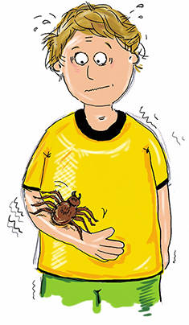
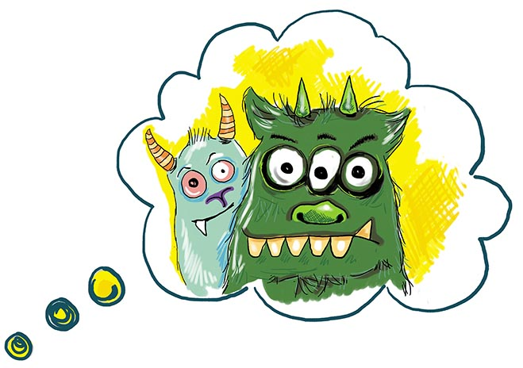

Angststörungen im Kindes- und Jugendalter
Spezifische Phobie
Der 10-jährige Basti geht nicht mehr in den Park zum
Fußballspielen. Seit er vor einem Jahr von einem Hund gebissen
wurde, hat er große Angst überhaupt vor die Tür zu gehen. Seine
Eltern müssen ihn zur Schule bringen und abholen. Wenn er
unterwegs einem Hund begegnet, bekommt er ganz starkes Herzklopfen
und wechselt teilweise auch ohne auf den Verkehr zu achten, sofort
die Straßenseite. Basti leidet unter einer so genannten
spezifischen Phobie.
Kinder und Jugendliche, die unter einer
spezifischen Phobie leiden, fürchten sich
sehr stark vor ganz bestimmten Dingen oder Situationen (z.B.
bestimmte Tiere wie Spinnen, Hunde oder Schlangen, aber auch
Gewitter, Dunkelheit, Zahnarztbesuchen oder Spritzen). Kinder mit
einer spezifischen Phobie
bekommen fast immer Angst, wenn sie mit einem bestimmten Objekt oder
einer bestimmten Situation konfrontiert werden. Daher versuchen
sie solche Objekte oder Situationen zu vermeiden. Dadurch können sie
dann oft bestimmte Dinge nicht mehr machen, die andere Kinder ohne
Angstproblem machen können (z.B. Draußen spielen).

